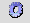

Sõnastiku eksport ja väljavõte MS Wordi faili
Oma sõnastiku saab EELexist "kätte" teda XML või MS Wordi failiks eksportides.
XML
Sõnastiku XML kujul eksportimiseks mine sõnastiku tööaknasse, võta Sõnastiku tööriistade  nupu alt valik
Eksport (XML koopia, ms loend ... ja ilmuvas aknas vali
XML koopia (kõik). Ilmub dialoogiaken "Koopia tehtud! Klõpsa nüüd linki." Sule aken ja klõpsa eelmisesse aknasse ilmunud hüperlinki. Avanevas aknas saab valida, kas salvestada või avada see fail. XML fail salvestatakse zipituna kataloogi __sr/[sõnastiku id]. Mitmeköitelise sõnastiku puhul tekib vastavalt mitu XML faili, mille saab pärast lisatöövahendi xmlStats abil ühendada (vt
Lisatöövahend xmlStats).
Pabersõnastiku tegemine (MS Word)
Eeldus: MS Word on kasutaja arvutisse installeeritud. Wordi faili trükitavate artiklite hulka saab määrata päringuga või märksõnast märksõnani. Kõigepealt leia Tööakna otsilahtri kaudu Wordi faili trükitavad artiklid (vt
Sõnaartikli otsimine). Seejärel vajuta Tööaknas MS Wordi ikoonile ('Trüki artiklid).
1. variant. Päringuga leitavad märksõnad (näiteks e-algulised sõnad, kui otsilahtrisse sisestada e* jms). Soovitatav on teha päring enne Tööaknas läbi veendumaks, et on õiged artiklid leitud.
2. variant. Märksõnade vahemikku defineerides (nt hemoglobiin - histoloogia).
Soovi korral saab
leheküljed nummerdada.
Linnuke
Koos varjutatud tekstiga -- varjatud tekst on Vaate genereerimise lehel Artikli vaate kujundus linnukesega "Ei trüki" tähistatud elemendid ja atribuudid.
Tekkinud fail avatakse kohe Wordis failina c:/EELex/Väljatrükid/artiklid.txt. Säilitamise jaoks on mõistlik see salvestada uue nimega, sest iga järgmise Wordi väljatrüki teeb EELex selle faili "peale".
NB! Igal sõnastikul on maksimaalne arv, kuimitu esimest artiklit otsingutulemustest kuvatakse. Jälgi infot, mis ilmub otsitulemuste tabeli ette (nt:
Päring: [märksõna (.c:m) [ '*' (↔: 1)]], tt-tu, m-deta, glob. - 4 524 leidu, 4 518 artiklit. (näidatakse esimesed 5000 artiklit) ). Võib juhtuda, et leitud artikleid on liiga palju ja sellisel juhul tulevad Wordi faili needsamad artiklid, mida näidatakse (esimesed
n sõna). Jälgi infot, mis ilmub akna alumisse serva vasakusse nurka. Vajadusel muuda artiklite otsimise tingimusi. Vahemikku defineerides (märksõnast märksõnani) on kõige kindlam viis trükitavaid artikleid määrata.
Märksõnade loendi eksportimine
Kui on tarvis eraldi faili salvestada sõnastikus sisalduvate märksõnade loetelu, siis vali
Sõnastiku tööriistad --
Eksport (XML koopia, ms loend...) --
Ms. loend. Loend ilmub eraldi brauseriaknasse, kust selle võib salvestada kohalikku masinasse (File -- Save as...).